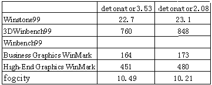
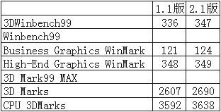

|
|
| 当前位置：电脑报电子版 > 1999 年 > 44 期 > 评测与市场 > 配机方案 软件升级方案 |
| 《 配机方案 软件升级方案 》 |
| BIOS和驱动程序是电脑系统中很重要的部分，升级BIOS和驱动程序可以提高系统性能和兼容性，而且不必付出额外的开支，非常符合DIY精神，我们通常把它称为“软升级”。以前的配机方案都没有向读者提供这一部分的支持，普通用户由于条件所限，对“软升级”也没有什么概念，浪费了资源。本报评测室以后会对配机方案提供长期的“软升级”支持，不定期向读者提供配机方案相关的BIOS、驱动程序和工具软件信息，并且经过实际使用和评估，指导用户是否有必要升级，并详细说明其中的利弊。与此相关的软件，用户可以到http://itdiy.cpcw.com下载。
大众星 这款配置由于采用了整合型主板，驱动程序升级较方便。目前810主板多数采用Intel公司的公版显示驱动程序，该驱动程序在8月10日发布了最新的2.1版，经过我们的测试，810主板2.1版本的显示驱动程序在性能上有比较明显的提高（见表1）。大众星采用的硕泰克65H64的驱动光盘在8月25日以后的版本使用了2.1版的Win95/98显示驱动程序， 较早的光盘上驱动程序版本为1.1。请观察光盘数据区内圈，该处刻有光盘的制作日期，如果是8月25日之前的产品，请下载并升级显示驱动程序。  通用星 通用星配置的耕宇战斧M64显卡采用nVidia的显示芯片。较早的detonator“雷管”2.08公版驱动程序就已经很成熟。nVidia推出新版驱动程序的速度很快，继2.08以后，另外两个版本是2.31和3.53，3.53支持即将推出的GeForce256。  高速星 高速星采用的微星6199主板已经发布了3.1版BIOS ，该版BIOS自适应6199和不集成声卡的6199 NA，支持赛扬500、PⅢ 600和Coppermine CPU，核心电压加入20％调整幅度，加入Top Tech Ⅲ，并修改了一些小Bug。这款配置的显示卡Voodoo3 2000的驱动程序都来源于3dfx，目前使用较多的版本是Voodoo3 Driver kit: 1.02.18，该版驱动程序中已经提供了OpenGL ICD。10月28日，驱动程序更新为Voodoo3 Driver kit: 1.03.00。新版驱动主要的改进是提供两个软件包分别支持DirectX 6和DirectX 7，并修改了几处小Bug。经过测试，这两种版本的驱动程序性能上没有差异，所以如果DirectX 6用户没有在电源管理和屏幕保护方面遇到问题，就没有必要升级。对于比较追新的用户来说，Voodoo3 Driver kit: 1.02.18并不提供对DirectX 7的支持，请下载并升级到最新版的驱动程序。 梦幻星 技嘉GA－BX2000主板最新BIOS 1.8版于10月3日发布，这一版BIOS支持Coppermine CPU，支持IBM 35G硬盘，解决了使用DMA66 RAID CARD的问题，准备通过使用扩展卡支持DMA/66的用户一定要升级BIOS。不过现在DMA66 RAID CARD价格较高，可选择的产品也很少，所以我们暂时不推荐。ELSA ERAZOR Ⅲ在1999年9月7日发布了最新驱动4.11.01.0200－0029版，这一版驱动程序基于nVidia 2.31公版驱动，已经通过了2000年测试。ELSA自己的驱动程序还提供有显卡设置程序和工具。 适用于梦幻星配置的还包括西部数据的两个软件，比较重要的是西部数据硬盘测试工具(Hard Drive Quality Alert WD Caviar)最新版，该软件发布于9月28日。西部数据公司在9月28日发表了一项声明，大约在6～12个月后，部分5400转的WD硬盘会发生问题，原因是某些转包商提供了一些质量较差的芯片。这批EIDE接口的硬盘生产时间大概为8月27日到9月24日，容量从6.4G到20.5G都有。梦幻星选择的136AA也在其中，大家一定要下载这个测试程序测试你的WD硬盘！如果硬盘确实有问题，请及时联系经销商。另一个软件是西部数据Data Lifeguard Tools最新2.2版。这个硬盘配套工具可用于系统的启动及诊断，并且还包含有WD硬盘的DMA33/66转换工具，非常实用，具体的操作方法请浏览我们的网页。(无法上网的读者可以在我们的《PC DIY用电脑》杂志光盘上找到最新的驱动程序和工具软件) |
| 下载本期推荐软件 | 页 首 |
| 《电脑报》版权所有，CPCW网站编辑部设计制作发布 |